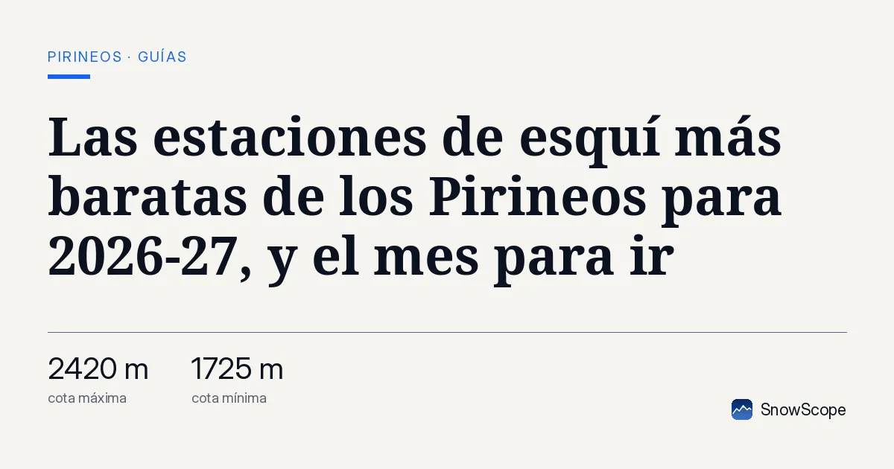
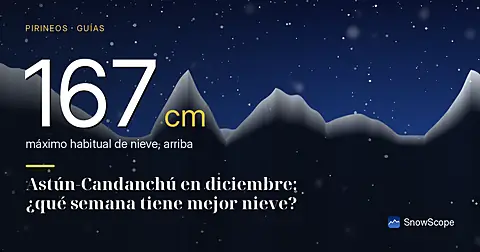

Las estaciones de esquí más baratas de los Pirineos para 2026-27, y el mes para ir
Los Pirineos son las montañas grandes más baratas para esquiar en Europa occidental: Cauterets vende un forfait de día para adulto a 46 EUR y Boí Taüll a 49 EUR. Pero aquí el momento elegido importa más que en los Alpes. En nuestro historial de nieve de 46 inviernos pasados, ninguna de las seis estaciones que comparamos tiene una sola semana con 50 cm de nieve en 9 de cada 10 inviernos, y diciembre suele ser flojo.
Consulta la previsión de nieve en tiempo real de Cauterets Cirque du Lys en la app SnowScopeEspesor de nieve, alertas de nieve polvo y mapa 3D, gratis.
Seis estaciones de los Pirineos por precio
Cauterets es la más barata, con 46 EUR al día en su tarifa pública, y 276 EUR por 6 días. Boí Taüll, en Cataluña, cuesta 49 EUR. El forfait conjunto Astún-Candanchú cuesta 54,5 EUR online y 59,5 EUR en taquilla, y el Grand Tourmalet, el dominio francés más grande de la cordillera, 55 EUR al día o 294 EUR por 6 días.
Los precios de Grandvalira, en Andorra, cambian según la fecha: 62,5 EUR online y 72 EUR en taquilla para el lunes 14 de diciembre de 2026. Baqueira Beret es la más cara de las seis, 70 EUR al día con su tarjeta recargable y 74 EUR con forfait normal, o 359 EUR por 6 días.
Por qué diciembre es una apuesta aquí
Los Pirineos son más bajos que los Alpes y están más cerca del Atlántico y del Mediterráneo, así que los temporales de principios de temporada suelen traer lluvia en las cotas bajas. En cota media, un diciembre normal deja 34 cm en Cauterets, 28 cm en Astún, 26 cm en el Grand Tourmalet y en Grandvalira, 25 cm en Boí Taüll y 20 cm en Baqueira Beret.
Enero cambia el panorama. A las mismas cotas suele haber 72 cm en Cauterets, 66 cm en Astún, 60 cm en Boí Taüll, 57 cm en el Grand Tourmalet, 54 cm en Grandvalira y 44 cm en Baqueira. Cauterets también tiene el mayor número de semanas con 50 cm en al menos la mitad de los inviernos: 15, por delante de Astún con 14.
Nuestras recomendaciones para un viaje barato a los Pirineos
Cauterets es la mejor relación calidad-precio en los dos sentidos: el precio más bajo y la nieve habitual más profunda de las seis. Su sector del Cirque du Lys es pequeño, 25 km de pistas señalizadas, pero está en una cubeta que retiene bien la nieve. Astún-Candanchú es la respuesta española, dos dominios con un solo forfait por encima de Canfranc, con remontes desde 1659 m.
Boí Taüll tiene los remontes más altos de la lista, de 2039 m a 2747 m, lo que ayuda en los días templados. Para un dominio grande, Grandvalira ofrece 136 km de pistas señalizadas; reserva online y elige días de entre semana fuera de vacaciones para pagar el precio más bajo.
Cuándo reservar
Para una semana barata con nieve, apunta a mediados de enero hasta principios de marzo, fuera de las vacaciones escolares francesas y españolas. La segunda quincena de enero suele ser la mejor combinación: nieve suficientemente profunda, pistas tranquilas y precios normales. Si solo tienes diciembre, espera a que caiga una nevada de verdad antes de reservar, y mantén el viaje corto.
La mayoría de estos precios son para toda la temporada 2026-27, pero Grandvalira y otras tarifas dinámicas suben a medida que se acerca la fecha. Comprar pronto por internet es la forma más sencilla de ahorrar.
Dormir barato en los Pirineos
Los pueblos del valle son el truco para ahorrar: el propio pueblo de Cauterets, Canfranc para Astún-Candanchú, los pueblos de la Vall de Boí, o Soldeu y los valles andorranos para Grandvalira. El mapa de este artículo muestra alojamientos por menos de 110 EUR la noche para la semana del 16 al 23 de enero de 2027 cerca de nuestras cuatro recomendaciones.
Consulta siempre el boletín de aludes antes de esquiar fuera de las pistas señalizadas, y recuerda que las carreteras de montaña en los Pirineos pueden necesitar cadenas después de un temporal.
Consejos para esquiadores
- Más barata y con más nieve: Cauterets, 46 EUR al día y 72 cm en un enero normal en cota media.
- Mejor mes: la segunda quincena de enero, fuera de las vacaciones escolares.
- Diciembre en los Pirineos: reserva solo después de una nevada de verdad.
- Grandvalira y otras tarifas dinámicas: compra online, con antelación, en días de entre semana.
Más mapas (sitios externos)
Referencias y créditos
- N'PY, Cauterets official ski pass prices 2026-27 www.n-py.com/fr/cauterets/forfaits-ski
- Boí Taüll, official lift pass prices (tarifes) pirineu365.cat/boitaull/estacio/tarifes/
- Astún, official lift pass prices (tarifas 26-27) astun.com/forfaits/
- N'PY, Grand Tourmalet official ski pass prices 2026-27 www.n-py.com/fr/grand-tourmalet/forfaits-ski
- Grandvalira, official ski pass booking (online price for 14 December 2026, read 2026-11-13) www.grandvalira.com/en/ski-pass/day
- Baqueira Beret, official prices (tarifas), season 26-27 www.baqueira.es/es/tarifas
Sobre estas cifras
Cifras de nieve: histórico de nieve de SnowScope, 46 inviernos pasados (1980-81 a 2025-26) a tres alturas de la estación, un modelo del pasado corregido por altitud (una estimación para una zona, no partes de la estación). Remontes, pistas y acceso: las fuentes de abajo, comprobadas en la fecha indicada.
Citar este informe
Para investigación, docencia o prensa: cifras y gráficos reutilizables libremente bajo CC BY 4.0 con esta cita.
SnowScope (2026), Las estaciones de esquí más baratas de los Pirineos para 2026-27, y el mes para ir, https://snowscope.app/blog/es/2026/11/cheapest-ski-resorts-pyrenees-2026-27-prices-snow.html, consultado el 2026-11-19
SnowScope (Atlas Labs). (2026, November 19). Las estaciones de esquí más baratas de los Pirineos para 2026-27, y el mes para ir. SnowScope snow reports. https://snowscope.app/blog/es/2026/11/cheapest-ski-resorts-pyrenees-2026-27-prices-snow.html
BibTeX
@misc{snowscope2026cheapestskiresortspyrene,
author = {{SnowScope (Atlas Labs)}},
title = {Las estaciones de esquí más baratas de los Pirineos para 2026-27, y el mes para ir},
year = {2026},
month = nov,
howpublished = {\url{https://snowscope.app/blog/es/2026/11/cheapest-ski-resorts-pyrenees-2026-27-prices-snow.html}},
note = {Published 2026-11-19 14:57 UTC; accessed 2026-11-19}
}· CC BY 4.0 · Métodos, datos y herramientas →
Sigue Cauterets Cirque du Lys
Gratis: un aviso cuando llega la nieve y la previsión cada mañana.
Más partes de nieve

¿Planeas un viaje en diciembre a Baqueira Beret? Mira nuestro historial de nieve, precios de forfaits desde 70,00 € para un pase de 1 día, y cómo se compara con Astún-Candanchú.

Para una semana de esquí familiar a buen precio en diciembre en Astún-Candanchú, apunta a finales de mes, cuando las pistas altas tienen buena nieve en el 67 % de los inviernos pasados.

Cauterets ofrece 25 km de pistas por 46 EUR, pero nuestro histórico de nieve muestra que la mejor oportunidad para encontrar cobertura es la última semana de diciembre.